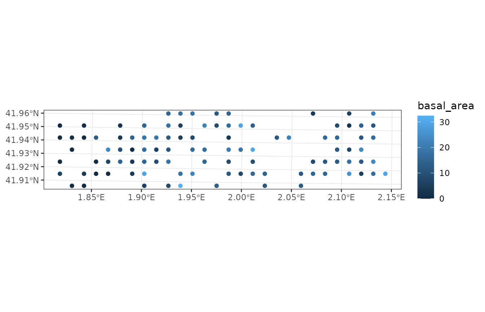
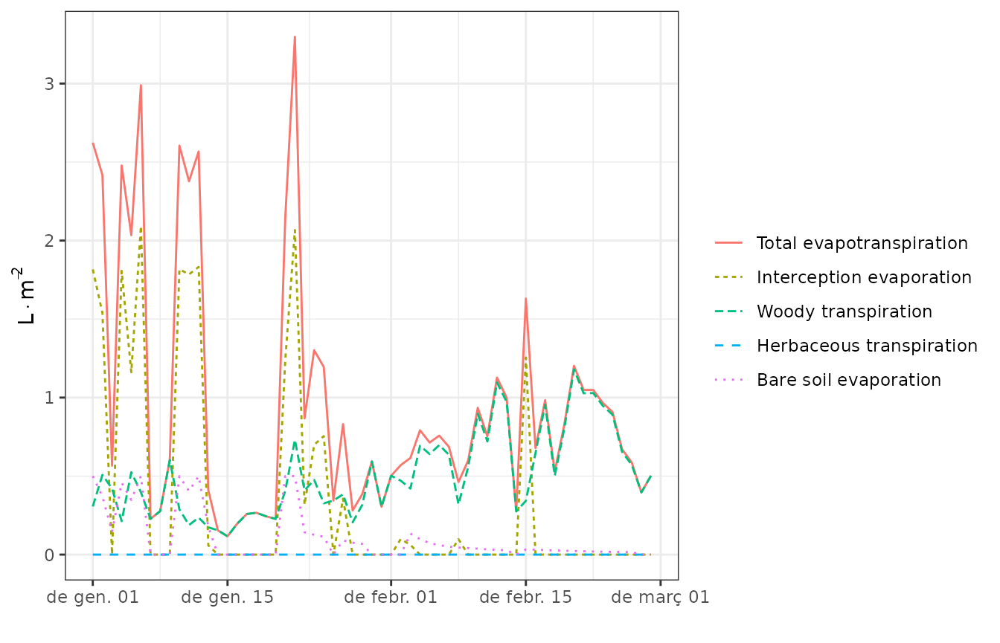
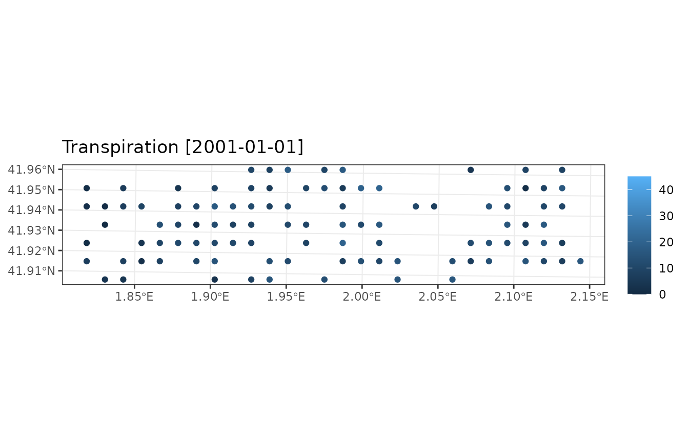
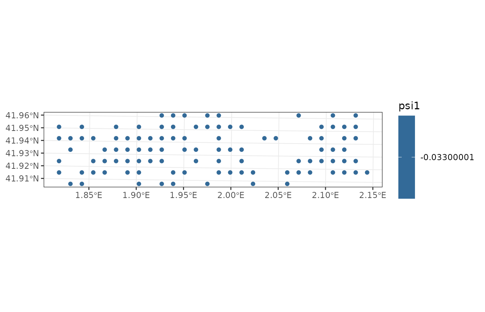
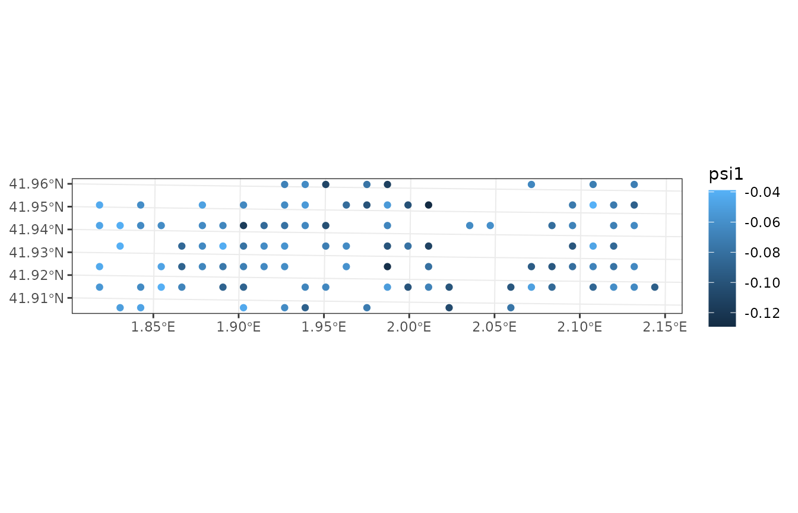
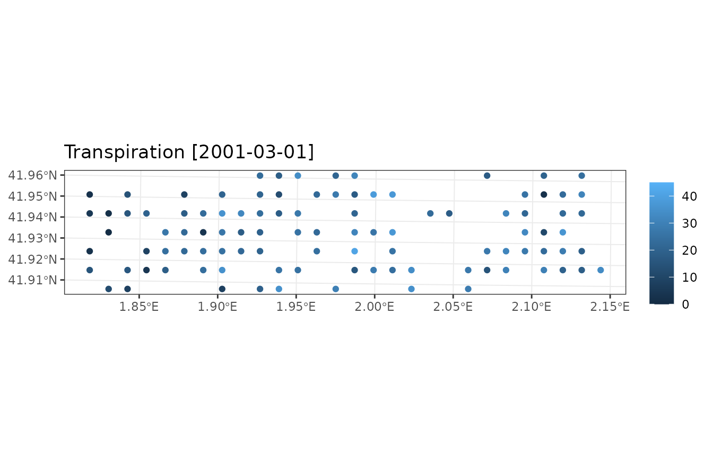

Landscape water balance
Miquel De Caceres
2022-11-23
LandscapeWaterBalance.RmdDisplaying properties of spatial objects
We begin by loading an example dataset of 100 forest stands distributed on points in the landscape:
data("examplepointslandscape")We transform the data set to class sf because sp objects are deprecated from ver. 1.0.0 on.
y = sp_to_sf(examplepointslandscape)
y## Simple feature collection with 100 features and 11 fields
## Geometry type: POINT
## Dimension: XY
## Bounding box: xmin: 402000 ymin: 4640000 xmax: 429000 ymax: 4646000
## Projected CRS: ETRS89 / UTM zone 31N
## # A tibble: 100 × 12
## geometry id elevation slope aspect land_cover_type forest soil
## <POINT [m]> <chr> <dbl> <dbl> <dbl> <chr> <list> <list>
## 1 (411000 4646000) 81065 516 9.94 92.7 wildland <forest> <soil>
## 2 (412000 4646000) 81066 537 13.7 115. wildland <forest> <soil>
## 3 (413000 4646000) 81067 578 23.3 152. wildland <forest> <soil>
## 4 (415000 4646000) 81068 615 12.7 360. wildland <forest> <soil>
## 5 (416000 4646000) 81069 644 22.5 186. wildland <forest> <soil>
## 6 (423000 4646000) 81070 520 4.04 225. wildland <forest> <soil>
## 7 (426000 4646000) 81073 608 12.2 337. wildland <forest> <soil>
## 8 (428000 4646000) 81075 745 8.06 332. wildland <forest> <soil>
## 9 (402000 4645000) 81076 527 14.4 245. wildland <forest> <soil>
## 10 (404000 4645000) 81077 483 26.0 36.7 wildland <forest> <soil>
## # … with 90 more rows, and 4 more variables: state <list>,
## # represented_area <lgl>, management_unit <lgl>, management_arguments <list>Using plot_variable() functions for spatial landscape
objects, we can draw maps of some variables using:
plot_variable(y, "basal_area")
The set of maps available can be known by inspecting the help of
function extract_variables(). Alternatively, the package
provides function shinyplot_land() to display maps
interactively.
Simulations on a set of forest stands
Package medfate includes functions spwb(),
growth() and fordyn() to simulate soil water
balance, carbon balance and forest dynamics on a single forest stand,
respectively. This section describe how to run simulations on a set of
forest stands in one call. This is done using functions
spwb_spatial(), growth_spatial() and
fordyn_spatial(), respectively.
As an example, we will use function spwb_spatial(),
which simulates soil plant water balance on forests distributed in
particular locations. The function takes an object of class
sf as input.
Weather inputs and local control parameters
As before, we need meteorological data, species parameters and control parameters for local simulations (which will apply to all forest stands):
Calling the simulation function
The call to spwb_spatial() can be done as follows (here
we restrict the dates for simplicity):
dates = seq(as.Date("2001-01-01"), as.Date("2001-02-28"), by="day")
res <- spwb_spatial(y, SpParamsMED, examplemeteo,
dates = dates, local_control = local_control, progress = FALSE)Function spwb_spatial() first initializes model inputs
by calling forest2spwbInput() for each forest stand
described in the sf landscape object. Then it calls
function spwb() for each forest stand and stores the
result. The fact that we used examplemeteo as
meteorological input involves that the same weather was applied to all
forest stands, but different weather could have been specified for each
one (see documentation of function spwb_spatial()).
The result of calling spwb_spatial() is an object of
class sf with the following columns:
names(res)## [1] "geometry" "id" "state" "result" "summary"Element geometry contains the geometry given as input to
simulations, vector state contains the
spwbInput corresponding to each forest stand (which can be
used in subsequent simulations), vector result contains the
output of spwb() function for each forest stand (i.e. its
elements are objects of the S3 class spwb) and
summary contains summaries (if requested, see below).
Temporal summaries, plots and maps
The structure of the output of spwb_spatial() allows
querying information for the simulation of any particular forest stand.
For example, we may use function plot.spwb(), from package
medfate, to display the simulation results on a
particular plot:
plot(res$result[[1]], "Evapotranspiration")
Similarly, if we want a monthly summary of water balance for the
first stand, we can use function summary.spwb() from
package medfate:
summary(res$result[[1]], freq="months",FUN=sum, output="WaterBalance")## PET Precipitation Rain Snow NetRain Snowmelt
## 2001-01-01 45.07945 74.74949 58.098839 16.650650 38.7641740 13.093006
## 2001-02-01 84.71521 4.99943 2.457859 2.541571 0.9249101 5.552842
## Infiltration Runoff DeepDrainage Evapotranspiration Interception
## 2001-01-01 51.857180 0 39.53244935 35.36906 19.334665
## 2001-02-01 6.477752 0 0.03075641 22.23615 1.532949
## SoilEvaporation PlantExtraction Transpiration
## 2001-01-01 5.482694 10.54935 10.55170
## 2001-02-01 0.874228 19.81821 19.82898
## HydraulicRedistribution
## 2001-01-01 0.03208459
## 2001-02-01 0.00000000However, a more convenient way of generating summaries is by
calculating them on all forest stands in one step, using function
simulation_summary() on objects issued from
simulations:
res_sum <- simulation_summary(res, summaryFunction = summary.spwb,
freq="months", output="WaterBalance")where the argument summaryFunction points to the
function to be used to generate local summaries and the remaining
arguments are those of the local summary function. The result of using
simulation_summary() is again an object of class
sf that contains the spatial geometry and the list of
summaries for all stands:
names(res_sum)## [1] "geometry" "summary"The summary for the first stand can now be accessed through the first
element of summary:
res_sum$summary[[1]]## PET Precipitation Rain Snow NetRain Snowmelt
## 2001-01-01 45.07945 74.74949 58.098839 16.650650 38.7641740 13.093006
## 2001-02-01 84.71521 4.99943 2.457859 2.541571 0.9249101 5.552842
## Infiltration Runoff DeepDrainage Evapotranspiration Interception
## 2001-01-01 51.857180 0 39.53244935 35.36906 19.334665
## 2001-02-01 6.477752 0 0.03075641 22.23615 1.532949
## SoilEvaporation PlantExtraction Transpiration
## 2001-01-01 5.482694 10.54935 10.55170
## 2001-02-01 0.874228 19.81821 19.82898
## HydraulicRedistribution
## 2001-01-01 0.03208459
## 2001-02-01 0.00000000Summary objects are handy because their plot_summary()
function allows us to display maps of summaries for specific dates:
plot_summary(res_sum, "Transpiration", "2001-01-01", limits=c(0,45))
plot_summary(res_sum, "Transpiration", "2001-02-01", limits=c(0,45))To avoid displaying maps one by one, the package includes function
shinyplot_land() that allows displaying maps of temporal
summaries interactively.
Advanced simulation features
Simulation with integrated temporal summaries
If one needs to save memory, it is possible with
spwb_spatial() to generate temporal summaries automatically
after the simulation of soil water balance of each stand, and storing
those summaries instead of all the output of function
spwb().
For example the following code will keep temporal summaries of water balance components instead of simulation results:
res_2 <- spwb_spatial(y, SpParamsMED, examplemeteo,
dates = dates, local_control = local_control,
keep_results = FALSE, progress = FALSE,
summaryFunction = summary.spwb, summaryArgs = list(freq="months"))Parameter keep_results = FALSE tells
spwb_spatial() not to keep the simulation results of forest
stands, whereas summaryFunction = summary.spwb tells
spwb_spatial() to perform and store summaries before
discarding the results of any stand.
Now the temporal summaries are embedded in the simulation results,
and can be directly accessed through the element
summarylist:
res_2$summary[[1]]## PET Precipitation Rain Snow NetRain Snowmelt
## 2001-01-01 45.07945 74.74949 58.098839 16.650650 38.7641740 13.093006
## 2001-02-01 84.71521 4.99943 2.457859 2.541571 0.9249101 5.552842
## Infiltration Runoff DeepDrainage Evapotranspiration Interception
## 2001-01-01 51.857180 0 39.53244935 35.36906 19.334665
## 2001-02-01 6.477752 0 0.03075641 22.23615 1.532949
## SoilEvaporation PlantExtraction Transpiration
## 2001-01-01 5.482694 10.54935 10.55170
## 2001-02-01 0.874228 19.81821 19.82898
## HydraulicRedistribution
## 2001-01-01 0.03208459
## 2001-02-01 0.00000000And one can produce maps with summary results directly from the output of the simulation function:
plot_summary(res_2, "Transpiration", "2001-02-01", limits=c(0,45))
Simulation in several steps
The result of a simulation includes an element state,
which stores the state of soil and stand variables at the end of the
simulation. This information can be used to perform a new simulation
from the point where the first one ended. In order to do so, we need to
update the state variables in spatial object with their values at the
end of the simulation, using function
update_landscape():
w = update_landscape(y, res)The resulting object w is the same as y
except for the state variables. For example we can compare the water
potential in the first soil layer:
plot_variable(y, "psi1")
plot_variable(w, "psi1")
By using w as input we can now simulate water balance in
the set of stands for an extra month:
dates = seq(as.Date("2001-03-01"), as.Date("2001-03-31"), by="day")
res_3 <- spwb_spatial(w, SpParamsMED, examplemeteo,
dates = dates, local_control = local_control,
summaryFunction = summary.spwb, summaryArgs = list(freq="months"),
progress = FALSE)And display a map with the resulting month transpiration:
plot_summary(res_3, "Transpiration", "2001-03-01", limits=c(0,45))Simulation of watershed hydrology
Simulation of watershed hydrology involves describing a watershed in a gridded mode and simulating soil water balance water while including additional compartments and hydrological processes, such as routing runoff from one cell to the other.
Example data set
To illustrate this kind of simulation, which is carried out using
function spwb_land(), we first load a small example
watershed included with the package, which we transform to
sf:
data("examplewatershed")
y = sp_to_sf(examplewatershed)
plot_variable(y, "elevation")
Simulation function
As for the call to function spwb_spatial() we will use
the same weather (i.e. examplemeteo) across the watershed.
To speed up calculations we call function spwb_land() for a
single month.
dates = seq(as.Date("2001-01-01"), as.Date("2001-01-31"), by="day")
res_ws = spwb_land(y, SpParamsMED, examplemeteo, dates = dates, summary_frequency = "month")##
## ------------ spwb_land ------------
## Grid cells: 66, patchsize: 100 m2, area: 0.66 ha
## Cell land use wildland: 48 agriculture: 17 artificial: 0 rock: 1 water: 0
## Cells with soil: 65
## Meteorological input class: data.frame
## Number of days to simulate: 31
## Number of summaries: 1
## Number of outlet cells: 1
##
## Preparing spwb input...
## done.
##
## Initial average soil water content (mm): 530.8
## Initial average snowpack water content (mm): 0
## Initial average aquifer water content (mm): 0
## Initial watershed water content (mm): 522.76
##
## Performing daily simulations:
## .+++++.+++++.+++++.+++++.+++++.+++++.+++++.+++++.+++++.+++++.+++++.+++++.+++++.+++++.+++++.+++++.+++++.+++++.+++++.+++++.+++++.+++++.+++++.+++++.+++++.+++++.+++++.+++++.+++++.+++++.+++++done
##
## Final average soil water content (mm): 530.8
## Final average snowpack water content (mm): 0.05
## Final average aquifer water content (mm): 57.08
## Final watershed water content (mm): 522.76
##
## Change in snowpack water content (mm): 0.05
## Snowpack water balance result (mm): 2.96
## Snowpack water balance components:
## Snow fall (mm) 16.65 Snow melt (mm) 13.69
##
## Change in soil water content (mm): 0
## Soil water balance result (mm): -1.27
## Soil water balance components:
## Net rainfall (mm) 52.39 Snow melt (mm) 13.7
## Runon (mm) 1.1 Runoff (mm) 0
## Subsurface input (mm) 0 Subsurface output (mm) 0
## Deep drainage (mm) 57.96 Aquifer discharge (mm) 0
## Soil evaporation (mm) 6.89 Plant transpiration (mm) 3.61
##
## Change in aquifer water content (mm): 57.08
## Aquifer water balance result (mm): 57.08
## Aquifer water balance components:
## Deep drainage (mm) 57.08 Aquifer discharge (mm) 0
##
## Change in watershed water content (mm): 0
## Watershed water balance result (mm): 58.78
## Watershed water balance components:
## Precipitation (mm) 74.75
## Interception (mm) 5.62 Soil evaporation (mm) 6.79 Plant Transpiration (mm) 3.56
## Export (mm) 0
## Watershed lateral flows:
## Subsurface flow (mm) 0
## Groundwater flow (mm) 9.03
##
## ------------ spwb_land ------------Although simulations are performed using daily temporal steps,
parameter summary_frequency allows storing results at
coarser temporal scales, to reduce the amount of memory in spatial
results.
Summaries and plots
Unlike spwb_spatial() where summaries could be
arbitrarily generated a posteriori from simulation results,
with spwb_land() the summaries are always fixed and
embedded with the simulation result. For example, we can inspect the
summaries for a given landscape cell using:
res_ws$sf$summary[[1]]## Runon Runoff Infiltration Rain NetRain Snow Snowmelt
## 2001-01-01 0 0 66.96921 58.09884 53.31927 16.65065 13.64994
## Interception DeepDrainage AquiferDischarge SaturationExcess
## 2001-01-01 4.779566 57.63314 0 0
## SoilEvaporation Transpiration SWE SoilVol Psi1 WTD DTA
## 2001-01-01 7.007932 3.224297 0 563.8283 -0.03300001 4000 14.72179
## InterflowInput InterflowOutput BaseflowInput BaseflowOutput
## 2001-01-01 0 0 8.30387 5.665909Several plots can be drawn from the result of function
spwb_land() in a similar way as done for
spwb_spatial(). As an example we display a map of soil
water volume for the simulated month:
plot_summary(res_ws$sf, "SoilVol", "2001-01-01")